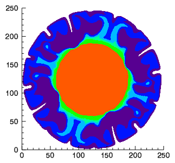

The CONTOUR function draws a two-dimensional contour plot for a 2D array of data.

The following lines create the graphic shown at the top of this topic.
file = FILEPATH('convec.dat', $
SUBDIR=['examples', 'data'])
z = READ_BINARY(file,DATA_DIMS=[248,248])
index = [30,60,90,120,150,220,255]
c = CONTOUR(z, /FILL, ASPECT_RATIO=1, $
RGB_TABLE=39, RGB_INDICES=index, C_VALUE=index)
See Surface, Contour, and Vector Examples for additional examples using the CONTOUR function.
graphic = CONTOUR( Z [, X, Y] )
The CONTOUR function returns a reference to the created graphic. Use the returned reference to manipulate the graphic after creation by changing properties or calling methods.
A two-dimensional array containing the contour data.
A vector or 2D array containing the x-coordinates of the Z data. If X is a vector, then each element specifies the x-coordinate for a column of Z. If X is a two-dimensional array, then each element specifies the x-coordinate of the corresponding point in Z.
A vector or 2D array containing the y-coordinates of the Z data. If Y is a vector, then each element specifies the y-coordinate for a row of Z. If Y is a two-dimensional array, then each element specifies the y-coordinate of the corresponding point in Z.
Properties marked as (Init) are applied only during the initial creation of the graphic. All other properties can be set during creation, or retrieved or changed after creation.
By default anti-aliasing is used when drawing lines. Set this property to 0 to disable anti-aliasing.
A floating point value indicating the ratio of the Y dimension to the X dimension in data units. If this property is set to a nonzero value, the aspect ratio will be preserved as the graphic is stretched or shrunk. The default value is 0 for all graphics except images, meaning that the aspect ratio is not fixed, but is allowed to change as the graphic is stretched or shrunk.
For 3-D graphics, a floating point value indicating the ratio of the Z dimension to the X and Y dimensions, in data units. If this is a nonzero value, the aspect ratio will be preserved as the graphic is stretched or shrunk. The default value is 0, meaning that the aspect ratio is not fixed, but is allowed to change as the graphic is stretched or shrunk.
Set this property to one of the following values:
You can set the following properties on the axes:
|
Property |
Description |
|
[XYZ]COLOR |
A string or RGB vector containing the axis color. |
|
[XYZ]GRIDSTYLE |
A string or integer giving the linestyle for tickmarks. |
|
[XYZ]LOG |
Set to 1 if the axis is logarithmic. |
|
[XYZ]MAJOR |
The number of major tick marks. Set to -1 to auto-compute, set to 0 to suppress. |
|
[XYZ]MINOR |
The number of minor tick marks. Set to -1 to auto-compute, set to 0 to suppress. |
|
[XYZ]SHOWTEXT |
Set to 1 to show text labels or 0 to hide the text labels. |
|
[XYZ]STYLE |
The axis range style. The valid values are: (0) "Nice" range. Default for all graphics except Image, Barplot, and Map. (1) Force the exact data range. Default for Image, Barplot, and Map. (2) Pad the axes slightly beyond the "nice" range. (3) Pad the axes slightly beyond the exact data range. Note - The [XYZ]RANGE takes precedence over this property. |
|
[XYZ]SUBTICKLEN |
The ratio of the minor tick length to the major tick length. The default is 0.5. |
|
[XYZ]TEXT_COLOR |
A string or RGB vector containing the axis text color. |
|
[XYZ]TEXTPOS |
Set to 1 to position text above the axis. The default is 0, below the axis. |
|
[XYZ]THICK |
Set to a floating-point value between 0 and 10 to specify the line thickness for tickmarks. A thickness of 0 gives a thin hairline. The default is 1. |
|
[XYZ]TICKDIR |
Set to 1 to draw the tickmarks facing outwards. The default is 0, facing inwards. |
|
[XYZ]TICKFONT_NAME |
A string containing the font name for the axis text. |
|
[XYZ]TICKFONT_SIZE |
The axis text size in points. |
|
[XYZ]TICKFONT_STYLE |
A string or integer containing the font style: "normal" (0), "bold" (1), "italic" (2), or "bold italic" (3). |
|
[XYZ]TICKFORMAT |
A string or string array of tick label formats. |
|
[XYZ]TICKINTERVAL |
The interval between major tick marks. |
|
[XYZ]TICKLAYOUT |
Set to 1 to suppress tick marks; set to 2 to draw a box around the tick labels. |
|
[XYZ]TICKLEN |
The normalized length of each major tick mark. Tick lengths < 0.25 are in arbitrary units that do not scale with the graphic. Larger tick lengths are normalized relative to the width of the graphic. The default is 0.05. |
|
[XYZ]TICKNAME |
A string array containing the tick labels. |
|
[XYZ]TICKUNITS |
A string giving the tick units. Valid values are "" (the default), "Years", "Months", "Days", "Hours", "Minutes", "Seconds", or "Time". If any of the time units are utilized, then the tick values are interpreted as Julian date/time values. If more than one unit is provided, the axis will be drawn with multiple levels. |
|
[XYZ]TICKVALUES |
An array of tick mark locations. |
|
[XYZ]TITLE |
A string giving the axis title. |
|
[XYZ]TRANSPARENCY |
An integer from 0-100 giving the percent transparency. |
For more detailed explanations of these properties, see the AXIS function.
Tip: You can also use the AXIS function to insert additional axes after the graphic has been created.
The window's background color. The default value is "white".
Set this property to 1 to direct the graphics to an off-screen buffer instead of creating a window.
Set this property to a string array of color names, or a 3 x N array of RGB color values representing the colors for each contour level. If there are more contour levels than elements in this vector, the colors will be repeated cyclically. If C_COLOR is set to 0, all contour levels will be drawn in the color specified by the COLOR property (this is the default).
Tip: Instead of C_COLOR, you can also use RGB_INDICES and RGB_TABLE to select colors from a predefined table.
Set this property to an array of IDLgrPattern objects representing the patterns to be applied at each contour level if the FILL property is non-zero. If there are more contour levels than fill patterns, the patterns will be cyclically repeated. If this property is set to 0, all contour levels are filled with a solid color (this is the default).
Set this property to a vector of values indicating the distance (relative to the length of each contour path) between labels for each contour level. If the number of contour levels exceeds the number of provided intervals, the values will be repeated cyclically. The default is 0.4.
Set this property to a vector of values indicating whether gaps should be computed for the labels at the corresponding contour value (so that the contour line does not pass through the label). A zero value indicates that gaps will be computed for labels at that contour value (this is the default); a non-zero value indicates that no gaps will be computed for labels at that contour value. If the number of contour levels exceeds the number of elements in this vector, the values will be repeated cyclically.
Set this property to an array of object references to provide examples of labels to be drawn for each contour level. The objects specified via this property must inherit from either IDLgrSymbol or IDLgrText. If a single IDLgrText object is provided, each of its strings will correspond to a contour level. If a vector of objects is used, any IDLgrText objects should have only a single string; each object will correspond to a contour level. By default, with C_LABEL_OBJECTS set equal to a null object, IDL computes text labels that are the string representations of the corresponding contour level values. The contour labels will have the same color as their contour level (see C_COLOR) unless the C_USE_LABEL_COLOR property is specified. The orientation of the label will be automatically computed unless the C_USE_LABEL_ORIENTATION property is specified. The horizontal and vertical alignment of any text labels will default to 0.5 (i.e., centered) unless the USE_TEXT_ALIGNMENTS property is specified.
Note: The objects specified via this property are used as descriptors only. The actual objects drawn as labels are generated by IDL.
Set this property to a scalar 1 to label all contour levels, or to a vector of 0's or 1's. For each contour value, if the corresponding value in the C_LABEL_SHOW vector is non-zero, the contour line for that contour value will be labeled. If the number of contour levels exceeds the number of elements in this vector, the values will be repeated cyclically. The default is 0 indicating that no contour levels will be labeled.
Set this property to an array of strings or integers representing the linestyle of each contour level. If this property is set to 0, all levels are drawn as solid lines (this is the default). The allowed values are:
| Index | String (case insensitive) |
|---|---|
| 0 | 'solid' or '-'(dash) |
| 1 | 'dot' or ':'(colon) |
| 2 | 'dash' or '--' (double dashes) |
| 3 | 'dash dot' or '-.' |
| 4 | 'dash dot dot dot' or '-:' |
| 5 | 'long dash' or '__' (double underscores) |
| 6 | 'none' or ' ' (space) |
Set this property to an array representing the thickness (between 1 and 10 points) to be applied at each contour level. If there are more contour levels than values, the values will be cyclically repeated. If this property is omitted or set to 0, all contour levels are drawn with a line thickness of 1 point.
Set this property to a vector of values (0 or 1) to indicate whether the COLOR property value for each of the label objects (for the corresponding contour level) is to be used to draw that label. If the number of contour levels exceeds the number of elements in this vector, the values will be repeated cyclically. By default, this value is zero, indicating that the COLOR properties of the label objects will be ignored, and the C_COLOR property for the contour object will be used instead.
Set this property to a vector of values (0 or 1) to indicate whether the orientation for each of the label objects (for the corresponding contour level) is to be used when drawing the label. For text, the orientation of the object corresponds to the BASELINE and UPDIR property values; for a symbol, this refers to the default (un-rotated) orientation of the symbol. If the number of contour levels exceeds the number of elements in this vector, the values will be repeated cyclically. By default, this value is zero, indicating that orientation of the label objects will be automatically computed to correspond to the direction of the contour paths.
Set this property to a scalar value or a vector of values for which contour levels are to be drawn. If this property is set to 0, contour levels will be evenly sampled across the range of the Z argument, using the value of the N_LEVELS property to determine the number of samples. IDL converts, maintains, and returns this data as double-precision floating-point.
The contour color. Colors can be specified in the following ways:
| 1. | Using a string that contains a standard color name. You can use any of the string values defined by the !COLOR system variable. |
| 2. | Using a string that contains a hexidecimal color value, preceded by the # symbol. |
| 3. | Using a three-element RGB vector [red, green, blue]. |
Note: When you retrieve the COLOR property, the returned value will always be a three-element RGB vector, regardless of how the color was initially specified.
For example, the following values all specify the same color:
"light_blue"
"#ADD8E6"
[173, 216, 230]
This value will be ignored if the C_COLOR property is set to a vector.
Use this property to retrieve a reference to the Crosshair graphic. All graphics objects within the same set of axes share a single Crosshair graphic. For Plot graphics the default behavior is to display the crosshair when the plot is selected. For other graphics the crosshair is disabled. The STYLE property may be used to control the automatic crosshair display, while the LOCATION property is used to manually draw a crosshair.
You can get and set the following properties on the retrieved crosshair:
|
Property |
Description |
| ANTIALIAS |
Set to 1 to enable anti-aliasing for the lines. |
| COLOR | A string or RGB vector containing the color. |
| HIDE |
Set to 1 to hide the crosshair, 0 to show. |
| INTERPOLATE |
Set to 1 to force interpolation between Plot data points when SNAP is active. For other graphics this property is ignored. The default is 0. |
| LINESTYLE |
An integer or string giving the line style. The default is 'dot'. |
| LOCATION |
The location at which to draw the crosshair. For Plot graphics, if SNAP is enabled, then only the X coordinate needs to be supplied. Otherwise, LOCATION should be set to a two-element vector [X, Y] for two-dimensional graphics or [X, Y, Z] for three-dimensional graphics. If STYLE is currently "None", then setting the LOCATION will automatically set the STYLE to "Manual". |
| NAME |
The name of the graphic. |
| SNAP |
Set to 1 to snap the crosshair to the nearest Plot data point. For other graphics this property is ignored. The default is 1. |
| STYLE | An integer or string giving the crosshair style. Possible values are: 0 - "None" - never draw the crosshair. This is the default. 1 - "Manual" - draw the crosshair using the LOCATION property. 2 - "Auto" - automatically draw the crosshair. This is the default for plots. |
| THICK |
The thickness of the lines. The default is 1. |
| TRANSPARENCY |
The percent transparency of the lines. The default is 50. |
| UVALUE |
An IDL variable of any data type. |
For example, use the CROSSHAIR property to draw a crosshair on an image:
im = IMAGE(/TEST, TRANSPARENCY=50, AXIS_STYLE=2)
c = im.CROSSHAIR
c.COLOR = 'red'
c.THICK = 2
c.LOCATION = [300, 200]
See Creating Mouse Event Functions for a more detailed crosshair example.
Set this property to create the graphic in the current window. If no window exists, a new window is created.
Set this property to a vector of 7 strings to indicate the names to be used for the days of the week when processing explicitly formatted dates with the LABEL_FORMAT property.
Set this property to a two-element vector [bright, dim] specifying the near and far planes for depth cueing, in normalized units. Depth cueing causes graphics objects that are further away to fade into the background. The first element is where the fade starts to take effect, while the second element is where the objects are completely transparent. Negative values are closer to the eye, while positive values are farther from the eye. The default value is [0, 0] which disables depth cueing. A typical value would be [0, 1], which would cause objects to start to fade at the mid-plane of the window, and completely fade out at a normalized eye distance of 1.
Set this property if values are specified in device coordinates (pixels) for the MARGIN and POSITION properties. (Normalized coordinates are the default for these properties.)
Set this property to a two-element vector of the form [width, height] to specify the window dimensions in pixels. If you do not specify a value for DIMENSIONS, IDL by default uses the values of the IDL_GR_WIN_HEIGHT and IDL_GR_WIN_WIDTH preferences for Windows platforms or the IDL_GR_X_HEIGHT and IDL_GR_X_WIDTH preferences for X Windows systems on UNIX.
Set this property to indicate that tick marks should be drawn on each contour level to indicate the downhill direction relative to the contour line.
Set this property to indicate that the contours should be filled. The default is to draw the contour levels as lines without filling.
Tip: IDL only fills the regions in between the contour levels, and does not fill the region below the lowest level or above the highest level. To fill the region below the lowest level, you should specify an extra value at the start of your C_VALUE array that is less than the minimum of your contour data, along with an associated color in either C_COLOR or RGB_INDICES. Similarly, to fill the region inside the highest contour level, you should specify an extra value at the end of the C_VALUE array that is greater than the highest value in your data.
Set this property equal to the text color for the contour labels, title text, and axes (if present). The default value is "black".
Set this property equal to a string specifying the IDL or system font for the contour labels, title text, and axes (if present). The default value is “Helvetica”.
Set this property equal to an integer specifying the font size for the contour labels, title text, and axes (if present). The default value is 16 points.
Set this property equal to an integer or a string specifying the font style for the contour labels, title text, and axes (if present). Allowed values are:
|
Integer |
String |
Resulting Style |
|
0 |
"Normal" or "rm" |
Default (roman) |
|
1 |
"Bold" or "bf" |
Bold |
|
2 |
"Italic" or "it" |
Italic |
|
3 |
"Bold italic" or "bi" |
Bold italic |
Set this property to an integer or string specifying the units for the contour grid. This property applies only when there is a map projection inserted. It has the following values:
0 or "" - None. The image grid is in arbitrary units that are not tied to a map projection. The image will not be warped to the current map projection.
1 or "m" or "meters" - Meters. The image grid is in meters, and is tied to a particular map projection. The image will be warped to the current map projection.
2 or "deg" or "degrees" - Degrees. The image grid is in degrees longitude/latitude, and will be automatically warped to the current map projection.
Set this property to 1 to hide the graphic, or 0 to show the graphic.
Set this property to a string or RGB vector giving the color of the contour labels. If this property is set to a scalar value (-1 for example) then the contour labels will be given the same color as the corresponding contour level. This is the default behavior.
Set this property to a string that represents a format string or the name of a function to be used to format the contour labels. If the string begins with an open parenthesis, it is treated as a standard format string. (Refer to the Format Codes in the IDL Reference Guide.) If the string does not begin with an open parenthesis, it is interpreted as the name of a callback function to be used to generate contour level labels.
The callback function is called with three parameters: Axis, Index, and Value and an optional DATA property. Axis is simply the value 2 to indicate that values along the Z axis are being formatted, which allows a single callback routine to be used for both axis labeling and contour labeling. Index is the contour level index (indices start at 0). Value is the data value of the current contour level. DATA is the optional property allowing any user-defined value specified through the LABEL_FRMTDATA property.
Set this property to a value of any type. It will be passed via the DATA property to the user-supplied formatting function specified via the LABEL_FORMAT property, if any. By default, this value is 0, indicating that the DATA property will not be passed through.
Set this property to a string indicating the units to be used for default contour level labeling. Valid values are "" (the default), "Years", "Months", "Days", "Hours", "Minutes", "Seconds", or "Time".
Set this property to a three-element vector [ncol, nrow, index] that arranges graphics in a grid. The first dimension ncol is the number of columns in the grid, nrow is the number of rows, and index is the grid position at which to place the graphic (starting at element 1). This property is ignored if either OVERPLOT or POSITION is specified.
Set this property to a two-element vector [X offset, Y offset] giving the window's screen offset in pixels.
If a map projection is currently in effect, this property retrieves a reference to the MAPGRID object.
If a map projection is currently in effect, this property retrieves a reference to the MAPPROJECTION object.
A string giving the name of the current map projection. After creation, use this property to retrieve or set the current map projection.
Set this property to the current graphic’s margin values in the layout specified by the LAYOUT property. Use a scalar value to set the same margin on all sides, or use a four-element vector [left, bottom, right, top] to specify different margins on each side.
By default, margin values are expressed in normalized units ranging from 0.0 to 0.5. If the DEVICE property is set, the values are given in device units (pixels).
This property is ignored if either OVERPLOT or POSITION is specified.
The maximum value to be contoured. If this property is set, data values greater than the value of MAX_VALUE are treated as missing data.
Note: The IEEE floating point value NaN is also treated as missing data.
The minimum value to be contoured. If this property is set, data values less than the value of MIN_VALUE are treated as missing data.
Note: The IEEE floating point value NaN is also treated as missing data.
Set this property to a vector of 12 strings indicating the names to be used for the months when processing explicitly formatted dates with the C_LABEL_FORMAT property.
A string that specifies the name of the graphic. The name can be used to retrieve the graphic using the brackets array notation. If NAME is not set then a default name is chosen based on the graphic type.
Set this property to the number of contour levels to generate. This property is ignored if the C_VALUE property is set to a vector, in which case, the number of levels is derived from the number of elements in that vector. The default is 0, which indicates that IDL should compute a default number of levels based on the data range.
Set this property to 1 to create the graphic, but without any data attached to it. The axes and title (if present) are also created and displayed.
Note: You must still provide valid input arguments. The data range of the input arguments are used to automatically set the range of the axes. The [XYZ]RANGE properties may be used to override these default ranges.
Set this property to 1 (one) to place the graphic on top of the existing graphic in the current window. If no current window exists, a new window is created. Set this property to an existing IDL Graphic reference to direct the new graphic to the window specified by the provided IDL Graphic reference.
Set this property to 1 to enable a perspective graphics projection. In the perspective projection, objects that are further away will appear smaller. The default is 0, which is the orthogonal perspective.
Set this property to indicate that the contoured data is to be projected onto a plane. Unlike the underlying IDLgrContour object, the default for ICONTOUR is planar (PLANAR = 1), which displays the contoured data in a plane. See the ZVALUE property to specify the Z value at which to display the planar Contour plot if it is displayed in a three dimensional data space.
Set this property to a four-element vector that determines the location of the visualization within the graphic window. The coordinates x0, y0 represent the lower left and x1, y1 represent the upper right corners of the data space. Coordinates are expressed in normalized units ranging from 0.0 to 1.0. If the DEVICE property is set, the units are given in device units (pixels).
Note: When using POSITION, factor in enough space to display the title and axis labels. For example, if you use POSITION to place your visualization at 0 on the X or Y axis, any labels for that axis will not be visible.
Set this property to a vector of indices into RGB_TABLE to select colors to use for the contour levels. If the number of colors selected using RGB_INDICES is less than the number of contour levels, the colors are repeated cyclically. If RGB_TABLE is set, but indices are not specified, a default vector of indices is constructed based on the values of the contour levels scaled to the byte range of RGB_TABLE. This property is ignored if C_COLOR is set.
The number of the predefined IDL color table, or a 3 x 256 or 256 x 3 byte array containing color values to use for vertex colors. If the values supplied are not of type byte, they are scaled to the byte range using BYTSCL. Use the VERT_COLORS property to specify indices that select colors from the values specified with RGB_TABLE.
Set this property to a two-element array that specifies the range of pixel values (color indices) to use for shading. The first element is the color index for the darkest pixel. The second element is the color index for the brightest pixel. This value is ignored if the contour is drawn to a graphics destination that uses the RGB color model.
Set this property to 1 to use Gouraud shading, or to 0 (the default) to use flat shading. In flat shading the color has a constant intensity for each face of the contour, based on the normal vector. In Gouraud shading the colors are interpolated between vertices, and then along scanlines from each of the edge intensities. Gouraud shading may be slower than flat shading, but results in a smoother appearance.
Set this property equal to a number indicating the distance between downhill tickmarks, in data units. If TICKINTERVAL is not set, or is set to 0, IDL will compute the distance based on the geometry of the contour.
Set this property equal to a number indicating the length of the downhill tickmarks, in data units. If TICKLEN is not set, or is set to 0, IDL will compute the length based on the geometry of the contour.
Set this property to a string specifying a title. The title properties may be modified using FONT_COLOR, FONT_NAME, FONT_SIZE, and FONT_STYLE. After creation the TITLE property may be used to retrieve a reference to the title text object, and the TEXT properties may be used to modify the title object.
You can also add Greek letters and mathematical symbols using a TeX-like syntax. These symbols need to be enclosed within a pair of "$" characters. See Adding Mathematical Symbols and Greek Letters to the Text String for details on the available symbols.
An integer between 0 and 100 that specifies the percent transparency of the plot line. The default value is 0.
Set this property to 1 to indicate that for any text labels (as specified via C_LABEL_OBJECTS), the ALIGNMENT and VERTICAL_ALIGNMENT property values should be honored. The default is 0, indicating that the horizontal and vertical alignments will be set to 0.5, which will produce centered labels.
Set this property to an IDL variable of any data type.
A vector of colors to be used to specify the color of a contour vertex. The vector may be of the form [n*m] or [n, m] where each entry is a color index, or of the form [3,n*m] where each 3-element row is an RGB color, or of the form [4,n*m] where each 4-element row is an RGBA color. To remove vertex colors after they have been set, set VERT_COLORS to a scalar. If VERT_COLORS is not specified, the entire contour is drawn in the single color provided by the COLOR property, which is the default action. If this property is set to a vector or a two-dimensional array of equal size to Z, these values are indices into a color table that can be specified by the RGB_TABLE property. If more vertices exist than elements in VERT_COLORS, the elements of VERT_COLORS are cyclically repeated.
This property retrieves a reference to the WINDOW object which contains the graphic.
Set this property to the title of the IDL Graphic window. The title is displayed in the window's title bar.
A two-element vector giving the X data range to plot. The default behavior is to plot the entire data range.
A two-element vector giving the Y data range to plot. The default behavior is to plot the entire data range.
A two-element vector giving the Z data range to plot. The default behavior is to plot the entire data range.
For a planar contour plot, the height of the Z plane onto which the contour plot is projected. This property will be ignored if PLANAR=0.
|
8.0 |
Introduced |
|
8.1 |
Added the following properties: CROSSHAIR, MAP_PROJECTION, MAPGRID, MAPPROJECTION, UVALUE, WINDOW, [XYZ]SHOWTEXT, [XYZ]STYLE. Added the following methods: Delete, GetData, GetValueAtLocation, MapForward, MapInverse, SetData. |
IMAGE, SURFACE, Using IDL Graphics
CONTOUR CONTOUR CONTOUR CONTOUR CONTOUR CONTOUR CONTOUR CONTOUR CONTOUR CONTOUR CONTOUR CONTOUR CONTOUR CONTOUR CONTOUR CONTOUR CONTOUR CONTOUR CONTOUR CONTOUR CONTOUR CONTOUR CONTOUR CONTOUR CONTOUR CONTOUR CONTOUR CONTOUR CONTOUR CONTOUR CONTOUR CONTOUR CONTOUR CONTOUR CONTOUR CONTOUR CONTOUR CONTOUR CONTOUR CONTOUR CONTOUR CONTOUR CONTOUR CONTOUR CONTOUR CONTOUR CONTOUR CONTOUR CONTOUR CONTOUR CONTOUR CONTOUR CONTOUR CONTOUR CONTOUR CONTOUR CONTOUR CONTOUR CONTOUR CONTOUR CONTOUR CONTOUR CONTOUR CONTOUR CONTOUR CONTOUR CONTOUR CONTOUR CONTOUR CONTOUR CONTOUR CONTOUR CONTOUR CONTOUR CONTOUR CONTOUR CONTOUR CONTOUR CONTOUR CONTOUR CONTOUR CONTOUR CONTOUR CONTOUR CONTOUR CONTOUR CONTOUR CONTOUR CONTOUR CONTOUR CONTOUR CONTOUR CONTOUR CONTOURCONTOUR CONTOUR CONTOUR CONTOUR CONTOUR CONTOUR CONTOUR CONTOUR CONTOUR CONTOUR CONTOUR CONTOUR CONTOUR CONTOUR CONTOUR CONTOUR CONTOUR CONTOUR CONTOUR CONTOUR CONTOUR CONTOUR CONTOUR CONTOUR CONTOUR CONTOUR CONTOUR CONTOUR CONTOUR CONTOUR CONTOUR CONTOUR CONTOUR CONTOUR CONTOUR CONTOUR CONTOUR CONTOUR CONTOUR CONTOUR CONTOUR CONTOUR CONTOUR CONTOUR CONTOUR CONTOUR CONTOUR CONTOUR CONTOUR CONTOUR CONTOUR CONTOUR CONTOUR CONTOUR CONTOUR CONTOUR CONTOUR CONTOUR CONTOUR CONTOUR CONTOUR CONTOUR CONTOUR CONTOUR CONTOUR CONTOUR CONTOUR CONTOUR CONTOUR CONTOUR CONTOUR CONTOUR CONTOUR CONTOUR CONTOUR CONTOUR CONTOUR CONTOUR CONTOUR CONTOUR CONTOUR CONTOUR CONTOUR CONTOUR CONTOUR CONTOUR CONTOUR CONTOUR CONTOUR CONTOUR CONTOUR CONTOUR CONTOUR CONTOUR CONTOUR CONTOUR CONTOURCONTOUR CONTOUR CONTOUR CONTOUR CONTOUR CONTOUR CONTOUR CONTOUR CONTOUR CONTOUR CONTOUR CONTOUR CONTOUR CONTOUR CONTOUR CONTOUR CONTOUR CONTOUR CONTOUR CONTOUR CONTOUR CONTOUR CONTOUR CONTOUR CONTOUR CONTOUR CONTOUR CONTOUR CONTOUR CONTOUR CONTOUR CONTOUR CONTOUR CONTOUR CONTOUR CONTOUR CONTOUR CONTOUR CONTOUR CONTOUR CONTOUR CONTOUR CONTOUR CONTOUR CONTOUR CONTOUR CONTOUR